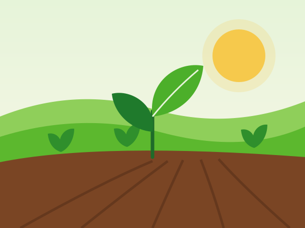

Organic Fertilizers Made for Indian Farms
GROAGRI ORGANICS is an organic fertilizer company based at Puthurmadam, Karatholuvu Road, Kaniyur. We manufacture and supply a complete range of organic manures, bio-fertilizers and liquid growth promoters for farmers, nurseries, plantations and home gardeners.
Years of chemical farming have left many soils tired and low in organic carbon. Our mission is to bring that soil back to life – using vermicompost, neem cake, beneficial microbes, seaweed and traditional preparations like Panchagavya – while helping farmers get the yields they need.
- Locally produced, quality-tested organic inputs
- Products for every crop stage – from sowing to harvest
- Honest advice and transparent product information

Our Mission
To make organic farming practical and profitable for every farmer by supplying effective, affordable and reliable organic fertilizers with the right guidance.
Our Vision
A future where every field in our region has living, fertile soil and every family eats food grown without harmful chemicals.
What We Stand For
Sustainability
We recycle farm and natural waste into valuable nutrients and care for the long-term health of the soil.
Quality
Raw materials are carefully sourced and every batch is checked before it reaches the farmer.
Farmer First
Fair pricing, honest recommendations and support in the local language, before and after the sale.
From Raw Material to Your Field
1. Careful Sourcing
We collect quality cattle dung, neem seed, plant residues, seaweed and certified microbial cultures.
2. Natural Processing
Composting, vermiculture, fermentation and microbial multiplication under controlled conditions.
3. Quality Testing
Each batch is tested for nutrients, moisture, pH and microbial count.
4. Packing & Delivery
Packed in farmer-friendly sizes and delivered to farms, dealers and nurseries.
5. Field Support
Our team helps with dosage, application timing and crop-wise schedules.
Partner With Us
Farmers, FPOs, nurseries and dealers – let’s grow together.